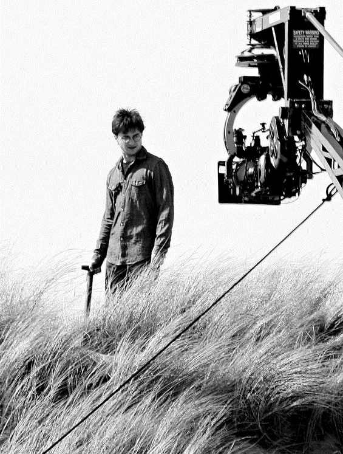

Родители Гарри Поттера, который является потомком младшего из братьев Певереллов, — волшебники — мракоборцы Лили (Эванс) Поттер и Джеймс Поттер. Лучший друг Джеймса Поттера и его однокурсник, анимаг Сириус Блэк, стал крёстным отцом Гарри.
До рождения Гарри в 1980 году провидица Сивилла Трелони произнесла в беседе с главой Хогвартса Дамблдором пророчество о том, что в конце июля родится мальчик, родители которого три раза бросали вызов вступившему на путь зла бывшему ученику Хогвартса Волан-де-Морту, и который или сможет победить Тёмного Лорда, или погибнет от его рук. Под условия пророчества подходили Гарри Поттер и родившийся на день раньше сын мракоборцев Фрэнка и Алисы Невилл Долгопупс. Лорд Волан-де-Морт, узнав о пророчестве от своего сторонника Северуса Снегга, решил уничтожить ребёнка, выбрав Гарри. Лили и Джеймс Поттеры использовали заклятие доверия, сделав Хранителем Тайны Сириуса Блэка, но в последний момент Блэку удалось уговорить семейную чету передать тайну укрытия Лили, Джеймса и Гарри, другому анимагу — Питеру Петтигрю, который предал их.
В следующем году вечером 31 октября Тёмный Лорд, узнав о местоположении Гарри, появился в Годриковой Впадине и напал на семью. Джеймс пытался защитить семью, но погиб от смертельного заклинания Авада Кедавра. По просьбе Северуса Снегга Тёмный Лорд собирался пощадить Лили, но она встала на его пути, защищая ребёнка. Тогда он убил и её. Когда Волан-де-Морт попробовал убить Гарри, Древнее заклинание защиты Лили отразило заклинание Авада Кедавра, оставив только шрам на лбу Гарри и ударив по Волан-де-Морту, Это нейтрализовало его на тринадцать лет, в результате образовался последний крестраж, которым стал Гарри, получивший шрам в виде молнии на лбу. Это была первая попытка убить Гарри Поттера. Ребёнка забрал с места трагедии Рубеус Хагрид и оставил его на пороге дома родственников — семьи Дурслей.
Первые 10 лет своей жизни Гарри жил, не подозревая о существовании магии. Дурсли держали его в подчинении и угнетении, надеясь таким образом нейтрализовать способности к волшебству, которые они считали ненормальными. Однако, несмотря на это, Гарри иногда проявлял магические способности, за что его каждый раз наказывали.
В одиннадцатый день рождения ему стали приходить письма из Хогвартса, но Дурсли уничтожали их, не позволяя Гарри их читать. Из-за этого письма приходили снова. Кончилось это тем, что Дурслей и Гарри, попытавшихся спрятаться от писем в хижине на острове посреди моря, посетил полувеликан Хагрид, который рассказал мальчику о его прошлом и мире волшебников. Вместе с ним Гарри посетил Косой переулок, чтобы купить всё необходимое для школы, а заодно познакомился с мастером изготовления палочек Олливандером. Помимо магазинов, в Косом переулке Хагрид и Гарри посетили отделение банка Гринготтс, и Гарри с удивлением узнал, что он богат. Там же Хагрид забрал философский камень, созданный Николасом Фламелем. Месяц спустя Гарри сел на Хогвартс-экспресс и прибыл в Хогвартс.
В поезде, едущем в Хогвартс, Гарри Поттер познакомился с Роном, Фредом и Джорджем Уизли и Гермионой Грейнджер. Сын Пожирателя Смерти Люциуса Малфоя Драко Малфой также предложил ему дружбу (они встречались в магазине мадам Малкин, находящимся в Косом переулке), но Гарри не понравились его совет не дружить с Роном и презрительное отношение к Хагриду. Гарри и Драко поссорились, с тех пор Драко стал его врагом.
Распределяющая шляпа предложила Гарри отправиться в Слизерин, но он отказался. Тогда она отправила его в Гриффиндор, куда также попали Рон с Гермионой.
На первом курсе Гарри и Рон подружились с Гермионой Грейнджер после победы над троллем Хэллоуин. Профессор зельеварения Северус Снегг возненавидел Гарри из-за сложных отношений с его отцом Джеймсом, с которым раньше учился в школе. На первом курсе Гарри не знал причин этой ненависти.
У Гарри обнаружился выдающийся талант к полётам на метле. Он был принят ловцом в команду Гриффиндора по квиддичу, став самым молодым ловцом за последние 100 лет. В дальнейшем Гарри оказался отличным игроком (подробнее см. статью квиддич).
Во время первой из игр метла начала сбрасывать Гарри в результате колдовства слабого и наивного профессора защиты от тёмных искусств Квиррелла, служившего Волан-де-Морту. Снегг защищал Гарри своей магией. Благодаря Гермионе, которая приняла это за нападение, кинулась поджечь его мантию и случайно сбила с ног Квиррелла, проклятие прекратило действовать, и метла перестала сбрасывать Поттера. Так закончилась неудачей вторая попытка убить Гарри.
Третья такая попытка произошла после того, как Гарри при поддержке друзей пробрался в комнату, где находился философский камень. Оказалось, что его хочет украсть Квиррелл, в которого вселился Волан-де-Морт. Цель кражи — возрождение Волан-де-Морта. Гарри сумел получить философский камень из зеркала Еиналеж, помешать Квирреллу украсть камень и, благодаря магической защите, продержаться в битве против профессора до прихода Альбуса Дамблдора, спасшего Гарри. Квиррелл погиб от прикосновения рук Гарри, а Волан-де-Морт не смог возродиться. Так провалилась третья попытка убить Гарри Поттера.
Благодаря тому, что Альбус Дамблдор присудил Рону, Гермионе, Невиллу и Гарри дополнительных 170 баллов в конце года, факультет выиграл соревнование.